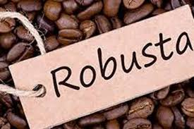
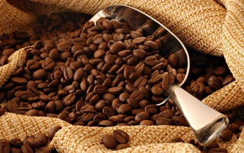

All About Coffee
-
 The Arabica coffee bean is like the mother of all coffees because it is the first type of coffee bean that was ever consumed. Although there are several types of coffee beans out there, Arabica is considered to have the finest quality. Today, Arabica is the most popular coffee bean in the world. In fact, it represents about 70 percent of the world’s coffee production.
The Arabica coffee bean is like the mother of all coffees because it is the first type of coffee bean that was ever consumed. Although there are several types of coffee beans out there, Arabica is considered to have the finest quality. Today, Arabica is the most popular coffee bean in the world. In fact, it represents about 70 percent of the world’s coffee production. -
The Robusta coffee bean is the world’s second most popular coffee next to the Arabica beans. It covers about forty percent of the world’s coffee production. It is the coffee bean that is commonly used in espresso and instant coffees. It is also used as a filler in ground coffee beans. Compared to the Arabica beans, Robusta beans have double the amount of anti-oxidant and caffeine. And it also grows faster and pest-resistant compared to Arabica coffee.
-
Coffee Liberica is the third most popular coffee bean species in the world. It originated in West and Central Africa, Liberia and Uganda. But today, it has been naturalized in French Polynesia, Colombia, Malaysia, Venezuela, Central America, Brazil, and the Philippines. The Liberica coffee has a fruity and floral flavor and it has a woody taste. Excelsa Coffee used to be considered a unique species of coffee but experts recently re-classified it as a variety of Liberica Coffee. The Excelsa beans grow in large trees in medium altitudes and they are mostly found in Southeast Asia. Excelsa coffee accounts for almost seven percent of the world’s coffee production Its coffee beans also look like the beans of the Liberica plant but only smaller. Excelsa coffee has a distinctive flavor that tastes like a tart or a ripened fruit. It is often mixed with Robusta and Arabica because it creates complexity and character to the coffee blend.